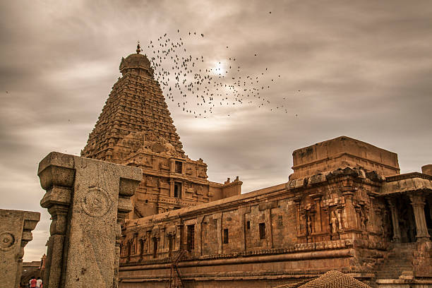

Welcome To Tamil Nadu!
Discover the herritage and culture of tamil nadu
A potpourri of vibrant cultures, exotic destinations and enduring memories,
welcome to one of the heartlands of human civilization.
Tamil Nadu - where stories never end.

Brihadeeswarar Temple, also known as Tanjore Temple, is a UNESCO World Heritage site renowned for its stunning Dravidian architecture and rich history, built by Raja Raja Chola I in the 11th century.